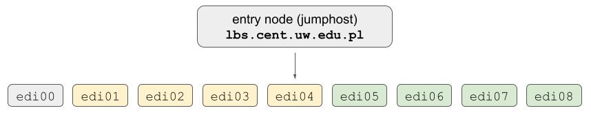

Getting started
Setting up an account
In order to create your an account on EDI cluster please reach out to Kamil and / or Staszek via Slack or e-mail.
** After the account is approved you will receive credentials via e-mail from the it @ cent.uw.edu.pl address.**
The obtained password will allow to login to the entry node (jumphost) at lbs.cent.uw.edu.pl and compute nodes edi0[0-8].
** Please familiarize yourself with the general rules of cluster usage before proceeding further - LINK **
Warning
Important: in case of lost password or other technical difficulties related to the entry node
(not compute nodes) please reach out to the IT department at CeNT UW - address: it @ cent.uw.edu.pl.
Include the [sih-61] prefix in the message title and add cluster administrators @Kamil and @Staszek in CC.
Information
Please note that password changes on each of the compute nodes and the entry node are synced. It is advised to change your initially obtained password after first login.
Connecting via SSH
Connections to the EDI cluster are handled via SSH protocol. See the figure below for a brief introduction of the network organization: 
In order to login to the entry node you can issue the following command:
ssh your_username@lbs.cent.uw.edu.pl
ssh your_username@edi01
In order to simplify file copying, every day work with e.g. Jupyter notebooks the suggested way of connecting
to individual edi nodes is to use sshuttle. This allows to
bypass the login node and work almost the same way as being connected via VPN to the local network.
Example
Assuming sshuttle was installed according to the guide
you can connect as follows:
sshuttle --dns -NHr your_username@lbs.cent.uw.edu.pl 10.10.61.1/24
edi node:
ssh edi05
Information
Additionally, depending on your computer and network settings, you may have to connect to edi nodes
once without sshuttle so that SSH connections are properly configured.
To avoid putting password during each login you can set up authorization via a certificate - additional information is available here
Work environment
Each user has access to two personal directories:
/home/users/your_username/home/nfs/your_username
Warning
The contents of the default directory /home/users/your_username are unique to each compute node and
they are not available on other nodes.
In order to use distributed file system please /home/nfs/your_username network mount
(please follow the guidelines).
Transferring files
The recommended options to send or fetch files from EDI cluster are either scp or rsync.
The storage on the entry host lbs.cent.uw.edu.pl is very limited therefore it is recommended to setup
sshuttle to send / fetch files directly.
Information
Assuming you established a connection with sshuttle you can directly send files or
directories to any edi node:
scp file.txt your_username@edi05:
Jupyter setup
add entry to ssh config file
With below entry you can login directly into edi cluster eg. ssh user@ediXX without specification of the jumphost.
add the following entry to your ~/.ssh/config if the file does not exsits create it.
REPLACE USER with your user name and ediXX with appropraite node in below command.
Host jumphost
User USER
Hostname lbs.cent.uw.edu.pl
Host ediXX
User USER
ProxyJump jumphost
start jupyter instance
now login into desired node activate appropriate python environemnt.
REPLACE port with you port typically in the range of 8000.
jupyter-lab --no-browser --port [port]
forward port
REPLACE [port] with the port value from above command and ediXX with destination node.
ssh -NL [port]:localhost:[port] ediXX
Next steps
Once the basics are set up you should be able to start running calculations. Follow the next chapter for more details.